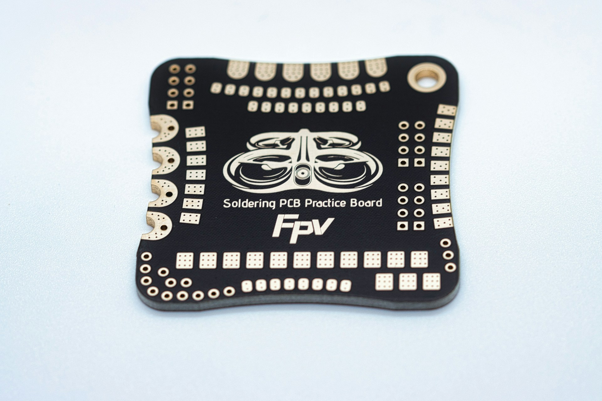
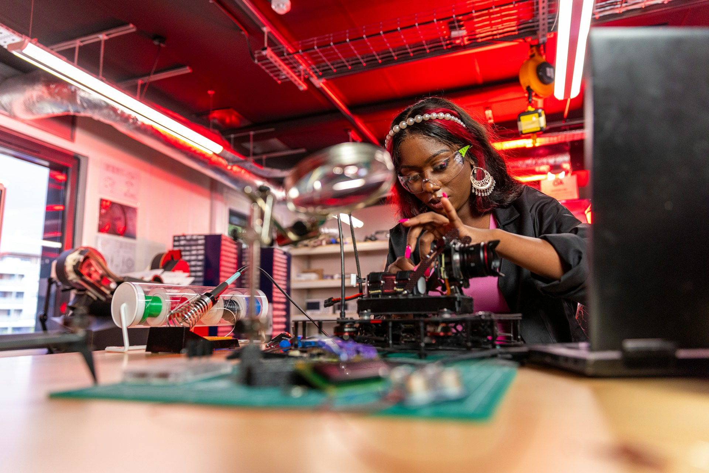
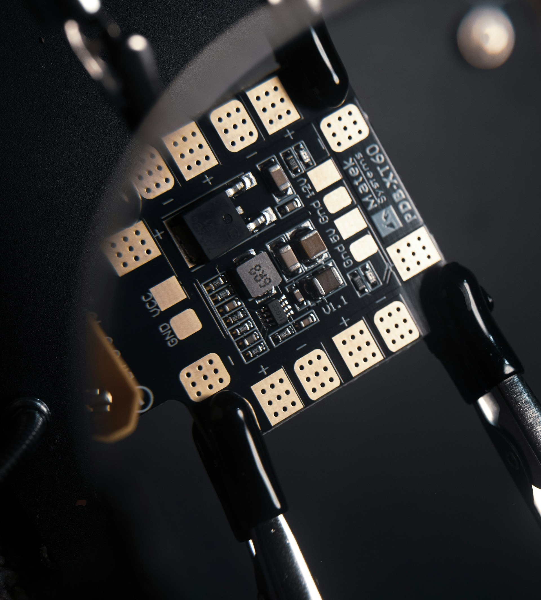

Build the missing skills
Short sessions around project scoping, CAD, electronics, documentation, testing, presentations, and responsible design.
Engineering for a More Connected World
A proposed public challenge where interdisciplinary teams could take a real problem from evidence to prototype, then explain and test important decisions.

In the proposed format, teams would be evaluated on problem understanding, technical decisions, testing, limitations, and communication. The goal is to reward honest evidence and strong reasoning rather than presentation polish alone.


Tracks create a useful starting structure without forcing interdisciplinary work into narrow categories. Final track language and eligibility will be published with the official rules.
PROTOTYPE DEMONSTRATION
+ TECHNICAL DEFENSE
A future final event could ask teams to demonstrate a prototype and explain the problem, design, testing, tradeoffs, failures, responsibility, and next step. Any judging format would be published only after the concept is approved and supported.
The challenge concept is designed as a guided build cycle. Teams receive structure, critique, and moments to change direction before the final showcase.
Short sessions around project scoping, CAD, electronics, documentation, testing, presentations, and responsible design.
Faculty, alumni, professionals, and advanced students challenge assumptions and help teams see technical risks earlier.
Teams present the problem, architecture, and evidence at checkpoints where changing course is still possible.
A future final event could bring projects, demonstrations, judges, partners, students, faculty, and the wider community into one room.
Any award categories, project support, sponsor contributions, or recognition will be announced only after the format and resources are confirmed.
For the strongest integrated engineering and execution.
For responsible design grounded in a real need and credible benefit.
For excellent testing, learning, documentation, and intellectual honesty.
For the project that most strongly connects with the public showcase audience.
Faculty, alumni, professionals, campus programs, community organizations, and companies can help the founding team evaluate whether this concept is useful, feasible, safe, and supportable.
Join the interest list as a student, mentor, volunteer, supporter, or community collaborator. Updates will be sent only when the founding team has a clearer, responsible next step.
The organizing team is still evaluating the concept. These answers explain a possible direction and do not represent official rules or confirmed commitments.
The concept is intended for Oberlin students across disciplines. Eligibility, team structure, and participation limits would be decided only if the program moves forward.
No. A team may begin with a community need, research question, design problem, or early concept. The competition arc is meant to help teams develop technical depth and evidence over time.
The final rules will define how prior work is treated. The goal is to welcome strong student projects while making the judging period and contributions transparent.
Any materials, workshops, mentor support, or funding would depend on confirmed resources and a transparent allocation process. Nothing is currently promised.
Interested faculty, alumni, organizations, and companies can offer feedback, mentorship, technical expertise, materials, or future support. Use the contact page and select the challenge topic.